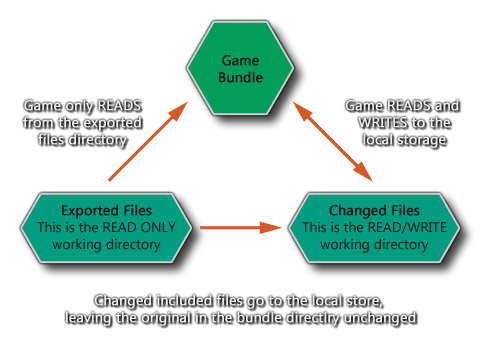

在使用 文件系统函数 或在 GameMaker Studio 2 中 内含文件 时，非常重要的一点是要确切了解所有的工作原理以及幕后发生的事情。为此目的，本节旨在解释和阐明东西是如何存储的，它们存储在哪里，以及这个系统可能存在的限制或变通方法。
关于文件函数，需要注意的第一点也是最重要的一点是，它们通常仅限于 沙箱。这意味着，如果没有用户 明确 的输入，GameMaker Studio 2 无法在游戏包或设备本地存储之外的任何地方保存或加载文件，即使这样，这种输入也 仅 限于 Windows 和 Mac 目标平台。
要理解沙箱，首先你需要理解文件有两个不同的区域：
- 文件包区（The File Bundle） - 在这里存储所有与可执行游戏打包的文件，包括你从 GameMaker Studio 2 IDE 中添加到 内含文件 资源列表中的文件（这些文件是你希望与游戏打包的外部文件）
- 保存区（The Save Area） - 这是一个可以被游戏安全写入的设备存储区域，并且游戏保证这是一个可写的区域。
下面的图表可以帮助你更好地理解这一点： 
注意： 永远不 能写入文件包目录。
这两个目标区域——文件包目录和本地存储区域——在每个目标平台上都可用，但在每个平台上它们的工作方式略有不同。然而，GameMaker Studio 2 抽象出了能做什么和不能做什么的主要本质，使其更容易将游戏重新定位到多个环境中。
首先，你该理解我们讨论 working_directory（工作目录） 时的含义。这是两个可能的保存位置的同义词（如上图所示），当你使用该目录时，它将根据你是否正在读取或写入，以及你正在读取的文件是否已更改，执行以下两种操作之一：
- 读取操作 - working_directory 将首先检查保存区，以查看正在访问的文件是否存在，是否使用该区域。如果文件不存在于保存区域，它会检查文件包区并使用它（如果正在查找的文件是游戏的内含文件）。
- 写入操作 - 这只能在保存区发生。
注意： 一般情况下，GameMaker Studio 2 会为你处理所有这些问题，你很少需要使用内置在变量中的 working_directory。使用这两个简单的规则，我们现在可以看到下面的函数是如何工作的（这些示例帮助你看到可用的不同函数的过程）：
- directory_create (和其他目录函数)只在保存区工作。
- 文件系统 函数将从文件包区和保存区 均 返回关于文件的信息，但只写入保存区。
- 写文本、二进制文件或 INI 文件函数将在保存区中创建一个新文件，如果不存在该文件，则从包含在游戏 文件包区中的 原始 文件中复制任何信息。注意，原始文件 仍然保留在文件包区的只读部分，但是只要保存区的读 / 写部分存在一个版本，它们就不会被引用。
在 Windows 和 Mac OS 平台上，有一种方法可以从沙箱外部保存和加载文件，即使用 get_open_filename 和 get_save_filename函数。这两个函数都要求用户选择要加载和保存的区域，然后可以在其他文件函数中使用返回字符串来绕过沙箱。有关详细信息，请参阅手册 脚本章节 中的函数描述。
在 HTML5 上，也可以从服务器的沙箱外部加载文件，但是这只能使用 buffer_load_async() 函数来完成，因为在大多数浏览器上同步加载已经被弃用，最终会被废弃。这意味着以这种方式加载的文件应该保存为二进制文件 —— 例如，你可以保存一个 *.ini 作为一个字符串（有关详细信息，请参阅 ini_close），然后将其写入一个缓冲区，然后可以使用异步函数保存和加载该缓冲区。注意，如果你使用 sprite_add 加载图像，那么这些已经异步处理了。
在使用 GameMaker Studio 2 时，你应该知道每个目标平台都有自己的保存区域，可以在其中写入和读取文件和目录。以下是每个目标涉及的领域：
- Windows 和 Windows UWP- Windows 所有文件在 %localappdata%\<游戏名> 目录（Windows 7 系统在 /Users/<User Name>/AppData/Local/<游戏名> 目录）。
- HTML5 - 一切都是通过本地存储。
- Mac OS - 存储将取决于应用程序是否被沙箱化（遵循苹果规则，路径通常为~/Library/Application Support/<游戏名>。
- Ubuntu (Linux) - 文件储存在 Home/.config/gamename，“Home” 是用户的 home 目录 - /home/<username>
- iOS - 存储在标准位置（通过iTunes查看）。
- Android - 文件在标准位置（不可见，除非设备 root 过）/data/<package name>。
值得注意的是，HTML5 目标模块对本地存储有限制（根据浏览器的不同，可以在 1 MB 到 5 MB 之间），这意味着你将不允许保存大精灵、截图等……